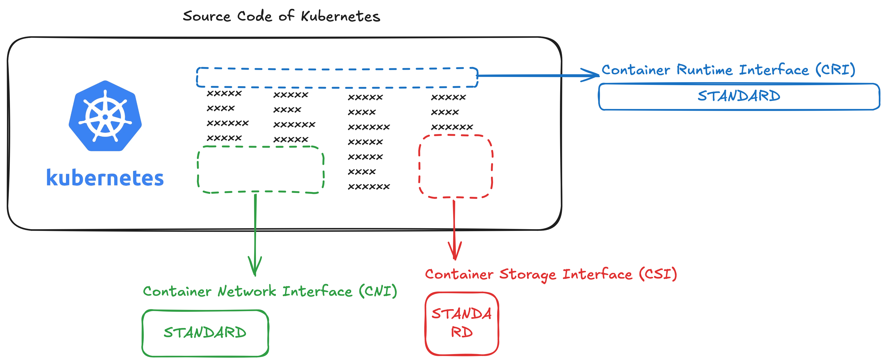

8.Storage
Storage in Docker¶
Where and how does Docker store data? Background: when installing Docker on your system. you will see this on your host:
/var/lib/docker
├── aufs
├── containers
├── image
└── volumes
Storage¶
Docker Storage¶
Docker's Layered architecture
Each line of instruction in Dockerfile creates a layer. Each Layer ONLY stores the changes comparing to the previous Layer.
FROM Ubuntu
RUN apt-get update && apt-get -y install python
RUN pip install flask flask-mysql
COPY • / opt/source-code
ENTRYPOINT FLASK_APP=/opt/source-code/app.py flask run
By building the image using docker build Dockerfile -t myImage we generate Layers. Notice the size of the Layer:
By building a Container from the Image, we ACTUALLY building another "Container Layer" -> This Layer will only exist when it Container exists.
Layers
- Image Layers: Read-only --> The image Layer will only change if you rebuild the image
- Container Layer: Read & Write, you can change the file inside the container. For example by
vi main.py--> The changes are temporary, they get delete as soon as Container is deleted
Storage Driver¶
The Storage Driver enables Layered Architecture. It's responsible to:
- creating a writeable layer, moving files
- across layers to enable copy and write
Common Storage Driver
There are several Storage Drivers on the market, e.g.: - AUFS - ZFS - BTRFS - Device mapper - Overlay - Overlay2
The selection of the storage driver depends on the underlying OS being used. For example, with Ubuntu the default storage driver is AUFS
Volume¶
Docker Volume¶
To have persistent volume that still exists even the Pod is dead, we can use Volume, there are 2 ways:
- Volume mounting: mount a folder under Host's Docker directory to Container
docker run -v data_volume:/var/lib/sql myContainer - Bind mounting: mount a random folder to Container
docker run -v /johndoe/sql:/var/lib/sql myContainer
Volume Driver¶
Volumes are handled by Volume Driver Plugins, common plugins:
- Local: default Plugin, create volume on the Docker Host, and store data under
var/lib/docker - Azure file storage
- Convoy
- DigitalOcean
- Block Storage
- Flocker
- Google Compute Persistent Disks
- Cluster FS
- NetApp
- REX-Ray
- Portworx
- VMware vSphere storage
Multi-provider Driver
Some of these Volume Drivers support different storage providers, for instance, REX-Ray storage driver can be used to provision storage on AWS EBS, S3, EMC storage arrays like Isilon and ScaleIO, or Google Persistent Disk, or OpenStack Cinder.
You can choose the Volume Driver when starting a container, the following CLI will create a container and attach a volume from the AWS Cloud. When the container exits, your data is safe in the cloud:
docker run -it \
--name mysql \
--volume-driver rexray/ebs \
--mount src=ebs-vol, target=/var/lib/mysql \
mysql
Container Storage Interface (CSI)¶
CSI
CSI is not a k8s/oc specific concept, but a universal standard that allows any container orchestration tool to work with any storage provider
History & Development¶
Previously, Runtime, Storage and Network code were all part of the Kubernetes source code:
The code is then extracted and defined as standard:

Now, when new storage solutions appear, all you have to do is writing a Standards-compliant Drivers（或者叫 Adapter 或 Plugin） - without touching the Kubernetes code:

The Interfaces
- CRI = Container Runtime Interface
- CNI = Container Network Interface
- CSI = Container Storage Interface
What is in CSI¶
The CSI Standard defines a set of RPCs(remote procedure calls), that will be called by the Container Orchestrator(Kubernetes or OpenShift), and these must be implemented by the CSI Drivers.
RPC Implementation
The CSI content can be find here in gitrepo
createVolume, deleteVolume, controllerPublishVolume,
CSI Driver¶
ermöglicht die Verbindung des OC-Clusters mit verschiedenen Speicherlösungen.
...
other content are already taught in CKAD